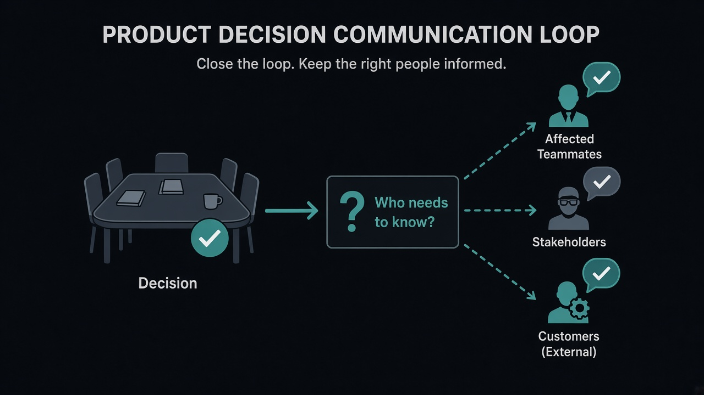

A decision isn't useful until the people affected by it know it happened
Source: Molly Graham (@molly_g)
original post
What it claims
Molly Graham's line is simple: a decision does not start working when the meeting ends. It starts working when the people who will act on it, or be blocked by it, actually know it happened. Closing with “Who needs to know about this?” turns communication from an afterthought into the last step of deciding.
Why it matters for a PO
PO decisions often look finished in the room — a backlog cut, a go/no-go, a scope trade — and then surprise someone who was not there. That person reopens the debate in Slack, or ships against the old plan. Asking who needs to know before you leave the meeting is how you make the decision real in the org, not only in the notes.
3 takeaways
- Treat “who needs to know?” as the last agenda item on decision meetings, not a courtesy after the fact.
- Map affected people by action: who must change behavior, who must stop waiting, who must unblock others.
- A decision that only the attendees know is incomplete, even if the write-up is perfect.
Practice this week
In your next decision meeting, reserve two minutes at the end for a named list: who hears this today, in what channel, and who owns the ping. Send those notes before you close your laptop.